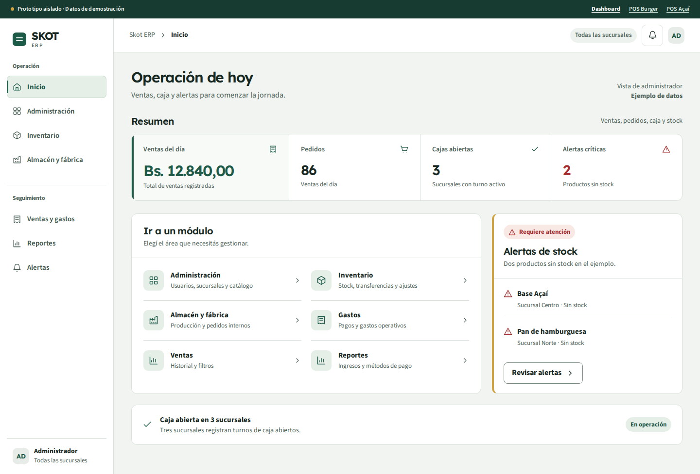
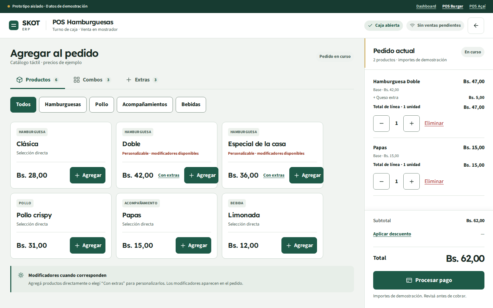
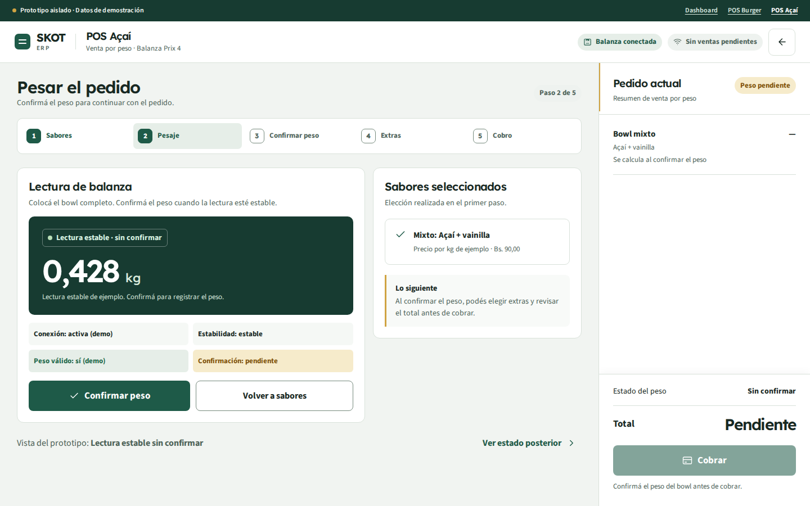

ERP administrativo
Operación de hoy
Resumen de ventas, pedidos, caja y alertas; navegación por tareas.
Abrir dashboardVer captura móvilUna identidad de precisión operativa para administración y venta en mostrador. Estas vistas usan datos de demostración y están separadas de la aplicación funcional.

Resumen de ventas, pedidos, caja y alertas; navegación por tareas.
Abrir dashboardVer captura móvil
Catálogo, combos, extras, modificadores y pedido con total visible.
Abrir POS BurgerVer captura móvil
Pesaje, confirmación, extras y cobro con estados visibles.
Abrir POS AçaíVer captura móvilLos enlaces y controles de venta dentro de las maquetas ilustran el diseño. No acceden a APIs, sesiones ni datos reales. Consultá el documento de especificación para reglas de componentes, responsive y criterios de validación.